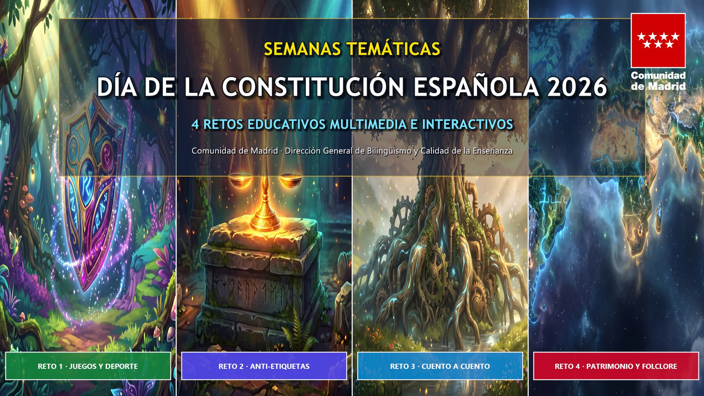
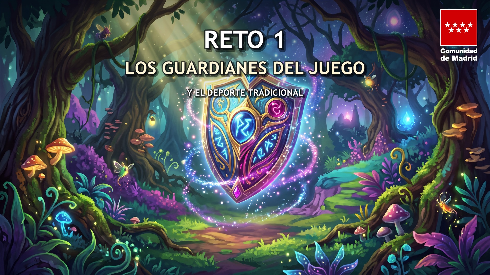
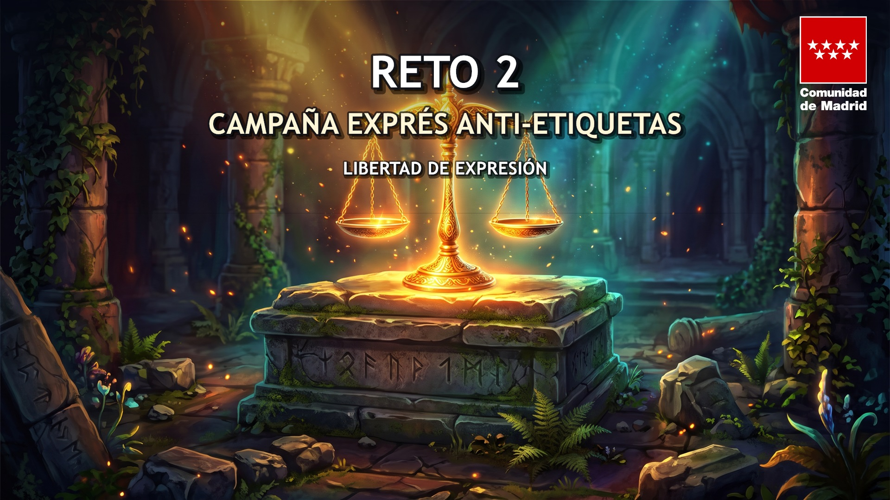
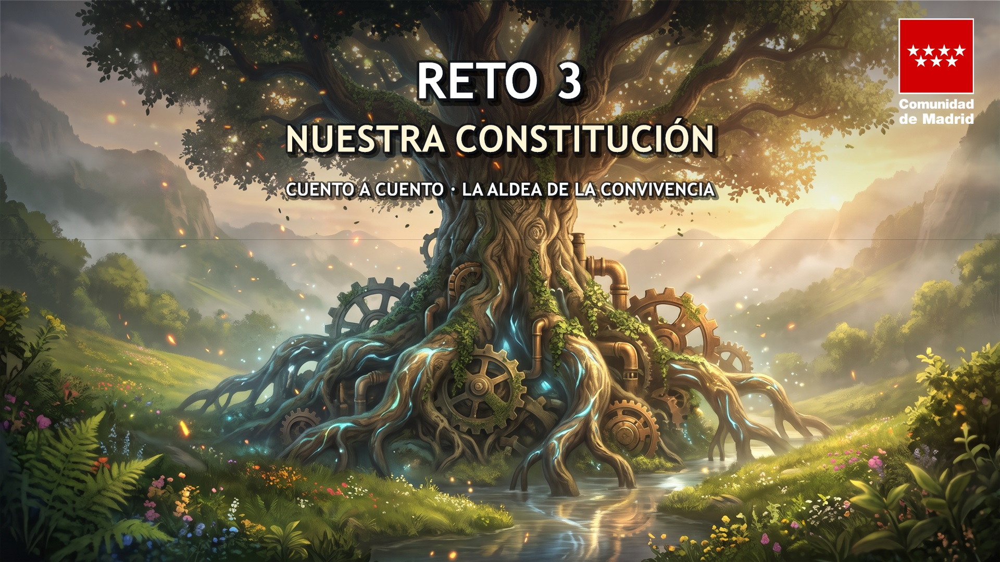
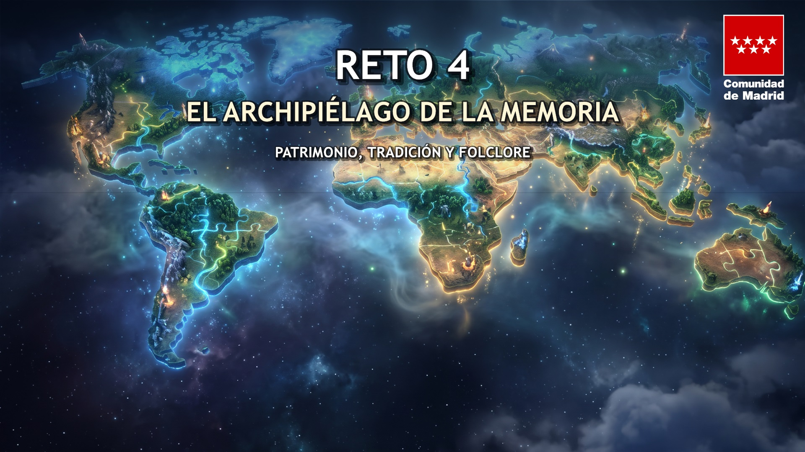

Atlas Biomecánico: 24 Ejercicios con Gomas + 11 Módulos de Movimiento
Suite educativa con simulación vectorial a 60 FPS (modelos Atleta Mujer 👩 y Hombre 👨), mapa de calor muscular, HUD articular, láminas técnicas anatómicas SVG y fichas descargables en PDF para el aula.
Materiales Didácticos Multimedia y Gamificados
Este panel centraliza la entrega definitiva de los 4 Retos Educativos para las Semanas Temáticas de la Constitución Española 2026. Cada reto se presenta en dos formatos completos e independientes: el Recurso 1 (Portal Web Institucional + Dossieres Imprimibles) y el Recurso 2 (Suite Interactiva Canva con Infografía 16:9 y Retos Educativos), acompañados por las 4 imágenes de carrusel oficiales (1920 × 1080 px) con la identidad corporativa de la Comunidad de Madrid.
🖼️ Imágenes Oficiales para el Carrusel de EducaMadrid (1920 × 1080 px · 16:9)

Día de la Constitución 2026: 4 Retos Educativos
1920 × 1080 px (16:9) · Composición general con los 4 retos y logo oficial de la Comunidad de Madrid









📁 Acceso a las 4 Carpetas de Entrega Oficiales
Los Guardianes del Juego y el Deporte Tradicional
Promoción del deporte, inclusión y preservación de juegos autóctonos madrileños (rayuela, calva, pañuelo, chapas).
Campaña Exprés Anti-Etiquetas y Ciudadanía Digital
Pensamiento crítico, verificación de noticias falsas (fake news) y defensa de los derechos individuales y el respeto en redes sociales.
Nuestra Constitución, Cuento a Cuento: La Aldea de la Convivencia y el Cofre de la Ciudadanía
Propuesta dual con 5 cuentos de asamblea para Infantil/Primaria y 5 obras literarias con dilemas éticos y retos competenciales (Canva, Genially, Padlet) para 1º y 2º ESO. Incluye 4 PDFs curriculares y conmutador bilingüe completo (ES/EN).
El Archipiélago de la Memoria · Patrimonio, Tradición y Folclore
Proyecto intergeneracional de Aprendizaje-Servicio para investigar, rescatar y proteger el patrimonio cultural material e inmaterial de Madrid.